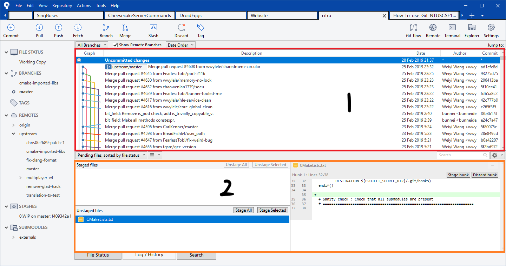
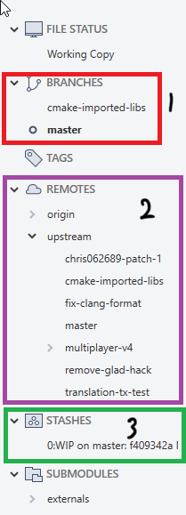

Introduction to SourceTree
This page will give you a brief guide on the SourceTree User Interface. It is color coded to tell you what it's referring to
Main Interface
- Top sidebar (see Sidebars)
- Left sidebar (see Sidebars)
- Staged files: Files that are staged for commit
- Unstaged files: Files that have been modified and is different from the current branch
- Diff of highlighted files
- Commit box: Fill up your commit message, the commit button and a checkbox to auto push commit after committing your changes

- History of all commits in the repository
- Staged/Unstaged files list (See first picture)
Sidebars
- Button to Push, Pull or Fetch commits respectively
- Branch button to create a new branch
- Stash button: This is used to save your changes that you have made temporarily if you do not wish to commit it first
- Add a new tab (if you have more repositories to clone or access)
- Button to access the Git terminal and view your repository in File Explorer respectively

- Branches currently on your local machine for you to switch to
- Branches found on GitHub for you to checkout (download to local machine)
- Stashes found on your local machine (you can right click to apply stash to reapply the changes you made back to the repository)